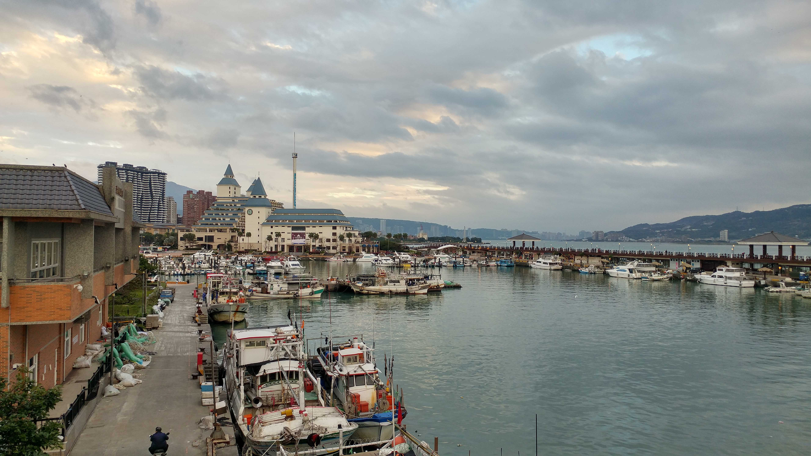

기억에 남는 여행지

여행 다니는걸 좋아해요. 영국, 동유럽, 미국 서부, 대만 등을 다녀왔고, 지금 가장 가고 싶은 나라는 포르투갈이예요. 한 여행지에서 오래 머무는걸 선호해요.
안녕하세요! 저는 루나입니다. 해리포터의 루나 캐릭터가 마음에 들어서, 해보다 달이 떠있는 시간을 더 좋아해서 루나라는 닉네임을 지었어요.
제 꿈은 '당당한 비주류'예요. 누가 뭐라고 하든지 나의 길을 개척하고 자신있게 걸어가고 싶어요.
밴드 음악과 공연, 게임을 좋아해요. 취미는 블로그에 글쓰기예요. 제 위키에 찾아와주셔서 반가워요!
여행 다니는걸 좋아해요. 영국, 동유럽, 미국 서부, 대만 등을 다녀왔고, 지금 가장 가고 싶은 나라는 포르투갈이예요. 한 여행지에서 오래 머무는걸 선호해요.

<이터널 선샤인>은 미셸 공드리 감독의 SF, 로맨스 영화입니다. 인기가 많아서 한국에서도 자주 재개봉되는 영화예요. 주인공 조엘이 전 연인과의 기억을 지우는 과정에서 계속 후회하고 기억을 붙잡으려는 내용을 담고 있어요. 다시 보면 처음의 감상이 달라지게 될까봐, 인생 영화이지만 딱 한 번만 봤어요. 혼자 봤는데 엔딩 스크롤이 끝난 후에도 여운때문에 한참 일어나지 못했던 기억이 강하게 남아있어요.
콜드플레이(Coldplay)의 정규 1집 'Parachutes' 앨범을 가장 많이 들었어요. 잔잔하고 어쿠스틱한 느낌이라 잘 때 무한 반복으로 틀어놨던 앨범이예요. 특히 2017년도 내한 공연 중 'Yellow'를 들었던 순간이 기억나요.
넬의 대표곡 '기억을 걷는 시간'이 수록된 앨범이예요. 싱가폴 여행가는 비행기에서 처음 들었는데, 사운드도 신선하고 앨범의 분위기가 몽환적이라 그때부터 팬이 됐어요. 그 후로 십여년 간 공연도 매번 챙겨 다니고, 힘들 때마다 많은 위로를 주고 있는 밴드입니다. 저의 자아가 확립될 시기에 많은 영향을 끼쳐서 이제는 저의 일부가 된 밴드이기도 해요.